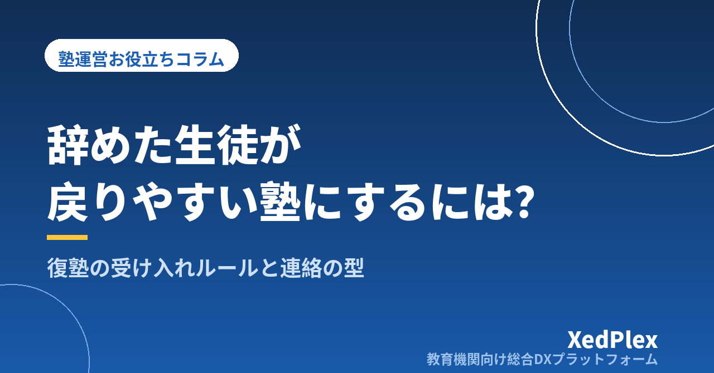

退塾した生徒が戻りやすい塾にするには？｜復塾の受け入れルール・退塾後の連絡・再開手続きを型にする

「去年まで通っていた〇〇です。部活を引退したので、また通わせてもらえますか？」──こんな連絡を受けたことのある塾長は多いと思います。うれしい反面、「入塾金はもう一度いただくべき？」「前に通っていたときの記録、どこにあったっけ？」「そもそも今の時間割に空きはある？」と、その場で答えに詰まってしまうことも少なくありません。
一方で、本当は戻りたいと思っていても、「一度辞めた塾に連絡するのは気まずい」と感じて、別の塾を探してしまう家庭もあります。退塾した生徒が戻ってきやすいかどうかは、退塾した日の対応と、塾側のルールが決まっているかどうかで大きく変わります。この記事では、個人塾・小規模塾が「復塾」を自然に受け入れられるよう、退塾時の扉の残し方、受け入れルール、退塾後の連絡の範囲、再開手続きの段取りを型として整理します。
復塾が起きやすいタイミングと、戻りにくくなる理由
退塾の理由が「塾への不満」ではなく、部活・家庭の事情・費用・時間の都合といった一時的な事情である場合、状況が変われば戻ってくる可能性があります。復塾の相談が来やすいのは、たとえば次のようなタイミングです。
| タイミング | よくある背景 |
|---|---|
| 部活の引退後（中3の夏前後など） | 時間に余裕ができ、受験勉強を本格的に始めたい |
| 定期テストや模試の結果が出たあと | 自分だけでは成績が維持できないと気づいた |
| 学年・学期の変わり目 | 新しい学年の学習内容に不安がある |
| 他の塾・通信教材を試したあと | 「前の塾のほうが合っていた」と感じた |
| 家庭の事情が落ち着いたとき | 引っ越し・送迎・費用などの事情が解消した |
逆に、戻りたい気持ちがあっても戻りにくくなる理由は、だいたい次の4つに集約されます。
- 気まずさ：辞めるときに引き止められた、気まずい別れ方をした
- 手続きが分からない：入塾金や料金がどうなるのか分からず、問い合わせをためらう
- 席がない：希望の曜日・時間が埋まっていて、受け入れられない
- 記録がない：塾側が以前の様子を覚えておらず、一から説明し直す必要がある
このうち「気まずさ」と「記録」は退塾時の対応で、「手続き」と「席」は事前のルールづくりで減らせます。
退塾時に「戻れる扉」を残しておく
最終日は引き止めずに、扉を開けておく
退塾の申し出を受けたとき、強く引き止めたり、残念そうな態度を見せすぎたりすると、家庭にとっては「戻りにくい塾」になってしまいます。理由を丁寧に聞いたうえで、最後の授業では「これまでありがとう。また何か困ったら、いつでも相談してね」と、戻ってきてよいというメッセージを言葉にして伝えることが大切です。保護者にも、最後の連絡で同じ趣旨をひとこと添えておきます。
退塾理由の聞き取り方や記録の残し方は塾の退塾理由、本当の理由を聞けていますか？で詳しく解説しています。
記録は「退塾」の状態にして残しておく
退塾した生徒の記録をすぐに削除したり、紙の名簿から外して行方不明にしたりすると、復塾のときに一から情報を集め直すことになります。塾の個人情報の扱いの方針に沿って保管期間と目的を決めたうえで、在籍中の生徒とは区別して「退塾」の状態で残しておくと、復塾時にすぐ参照できます。退塾時点で、次のような項目を最後にまとめておくと役立ちます。
| 項目 | 復塾時に役立つ理由 |
|---|---|
| 在籍期間・受講していたコース | 入塾金や料金の扱いを判断する材料になる |
| 退塾の理由（本人・保護者の言葉） | 同じ理由で再び辞めないための配慮ができる |
| 退塾時点の学習の到達点 | どこから再開するかの目安になる |
| 最後の成績・面談記録の要点 | 空白期間の前後を比べられる |
| 退塾後の連絡の可否 | 講習案内などを送ってよいかの判断材料になる |
保管期間や利用目的の考え方は塾が守るべき生徒の個人情報管理の基本も参考にしてください。法令上の判断が必要な場合は、所轄の行政機関や専門家に確認することをおすすめします。
復塾の受け入れルールを先に決めておく
復塾の相談は年に数件程度という塾も多く、毎回その場で判断しがちです。しかし、その場の判断は「前の子は入塾金なしだったのに」といった不公平につながります。次の項目だけは先に決め、塾の規約や料金表に書いておきましょう。
| 決めておく項目 | 考え方の例 |
|---|---|
| 入塾金の扱い | 「退塾から○か月以内の再入塾は入塾金を免除」など、期間で線を引く。期間は塾ごとに決める |
| 適用する料金 | 以前の料金ではなく、再開時点の料金表を適用する |
| 受け入れの優先順位 | 満席の場合は新規の問い合わせと同じくキャンセル待ちにするのか、優先するのか |
| 体験授業・面談の有無 | 体験は省略し、再開前の面談だけ行うなど |
| 再開のタイミング | 月の途中から再開する場合の月謝の扱い（日割りにするか、翌月からにするか） |
あわせて、「休塾」と「退塾」の違いも整理しておくと、戻る可能性がある家庭に休塾という選択肢を示せます。休塾・退塾の規定の作り方は塾の退塾・休塾のルールと手続きの整え方、料金表全体の考え方は個人塾の料金体系の決め方をご覧ください。満席時の対応は個人塾の定員の決め方とキャンセル待ちの受け方が参考になります。
退塾後の連絡は「同意を得た範囲で、控えめに」
退塾した家庭に季節講習の案内などを送ることは、復塾のきっかけになり得ます。ただし、頻繁な連絡は「しつこい塾」という印象を残し、かえって戻りにくくします。次の3点を目安にしてください。
- 最終日に連絡してよいかを確認する：「講習の案内などをお送りしてもよろしいですか？」と確認し、その答えを記録に残す。
- 頻度は講習前など年に数回まで：夏期・冬期講習の案内など、家庭にとって判断材料になる時期に絞る。
- 「不要」と言われたらすぐに止める：配信を止めてほしいという申し出には速やかに応じ、その旨も記録する。
連絡の内容は「戻ってきてください」という勧誘よりも、講習の日程や「学年の変わり目の学習相談を受け付けています」といった相談の窓口を知らせる形のほうが受け取りやすくなります。退塾後の連絡に関する法令上の扱いについて判断に迷う場合は、専門家に確認してください。保護者連絡全般の頻度の考え方は塾の保護者連絡、適切な頻度は？でも解説しています。
復塾が決まったら、最初の2週間でやること
復塾した生徒は「元在籍生だから大丈夫」と思われがちですが、空白期間があるぶん、新しく入塾した生徒と同じくらい丁寧な立ち上がりが必要です。
| 時期 | やること |
|---|---|
| 再開前 | 本人・保護者と面談し、空白期間に何をしていたか、今回の目的は何かを聞く。連絡先や学校・学年に変更がないか確認する |
| 再開前 | 入塾金・料金・再開月を確定し、請求の設定を再開する |
| 初回授業 | 退塾時点の到達点と比べて、今の学力を確認する |
| 1週目 | 担当講師に、以前の記録と今回の目的を共有する |
| 2週目 | 保護者に、再開後の様子と今後の方針を短く報告する |
学力の確認方法は塾の入塾時に生徒の学力・つまずきを把握する方法、立ち上がりの時期のフォローは入塾後1か月のフォローで早期退塾を防ぐの手順がそのまま使えます。特に、前回の退塾理由に関わる点（部活との両立、費用、通塾時間など）は、再開前の面談で必ず確認しておきましょう。同じ理由で再び辞めることを防げます。
まとめ：復塾は「退塾した日」から準備が始まっている
退塾した生徒が戻ってきやすい塾にするために必要なのは、特別な営業ではありません。退塾時に気持ちよく送り出して記録を残し、受け入れルールを先に決め、退塾後の連絡は同意を得た範囲で控えめにし、再開後は新入生と同じように丁寧に立ち上げる。この4つを型にしておけば、「また通いたい」という連絡に、その場で迷わず答えられるようになります。
まずは、塾の規約に「再入塾の場合の入塾金の扱い」が書かれているかを確認するところから始めてみてください。書かれていなければ、次の講習案内を出す前に一行加えておくだけでも、復塾の相談を受けたときの対応がぐっと楽になるはずです。
この記事を書いた運営より
私たちは、個人経営・小規模の学習塾向けに、生徒管理・QRコードでの入退室記録・月次請求・保護者へのLINE/メール通知・AIによる学習支援までをひとつにまとめた教育機関向け総合DXプラットフォーム「XedPlex（ゼドプレックス）」を開発・提供しています。初期費用は0円、料金は生徒1名あたり月額300円（税込）から。生徒50名の塾なら月15,000円（税込）です。全国8つの教室で導入されており、導入塾には紹介ホームページの無料作成も行っています。機能の詳細説明はこちら。
XedPlexの詳細を見る